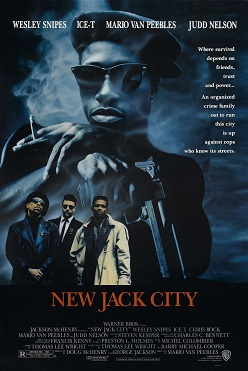

Mario Van Peebles
1991
100 minutes
This is one of several 1990s gangsta-with-an-a films that seemed interchangeable at the time. They're all good and bad and cheesy in their own ways. You'll see most of these at some point in a chair at a barbershop, but never a full one. Your haircuts aren't that complicated.
This is the one with Ice-T in it, not to be confused with Ice Cube. This one lets you know how it would feel if you recognized Sam Waterston on Law & Order from The Killing Fields first, or William Petersen on CSI from To Live and Die in LA first. Although, to be fair, Ice-T does play a cop in this one, though the same is true of William Petersen... In any case, at least you recognize Ice-T from his rap career first, so the point still holds.
Like Karl Marx, you only drink herbal tea these days. (Marx only drank herbal tea as well, since the Marxist belief is that proper tea is theft.) You usually drink your tea hot in the mornings in all seasons. You have never been much of a coffee drinker, and you gave up caffeine a few years ago in hopes of reining in some of your sleep disturbances and more unpleasant dreams. If you go to sleep with no alcohol at all you tend to have terrible nightmares, and caffeine tends to make them more frightening and more frequent. You enjoy iced tea, of course, but the southern version is ghastly (though a bit of a guilty pleasure), and too much sugar can be as unsettling to your brain and stomach as too much caffeine. Best to play it safe. It's already a delicate balancing act indulging in alcohol without overindulging or underindulging. But there's absolutely nothing wrong with a morning tea, usually mint or the occasional rooibos if you are really hungover for some reason.
Time to choose something different: